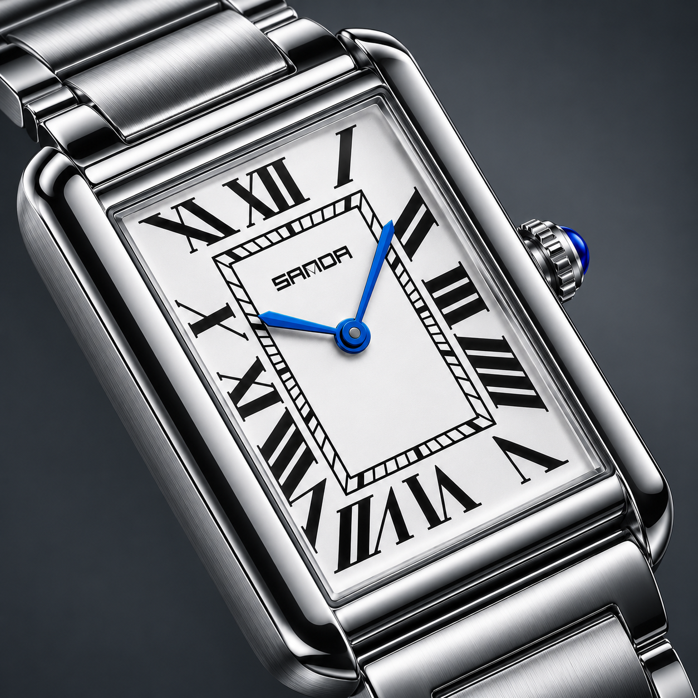
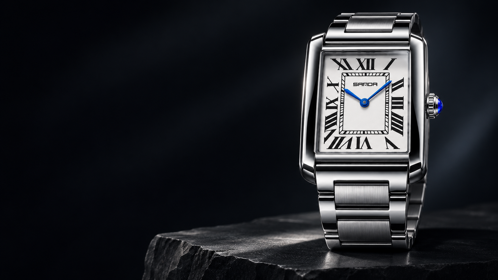
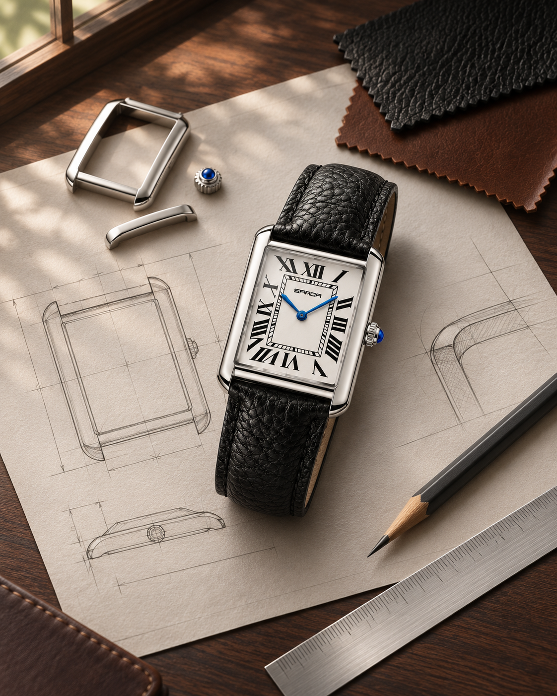
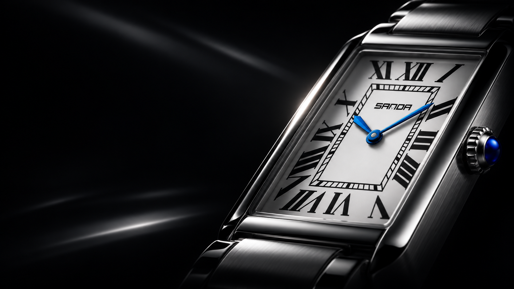
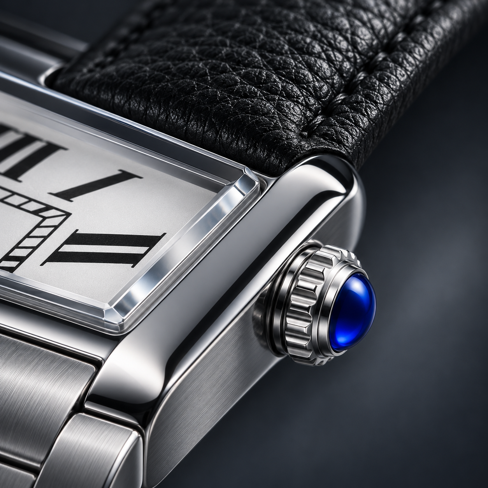
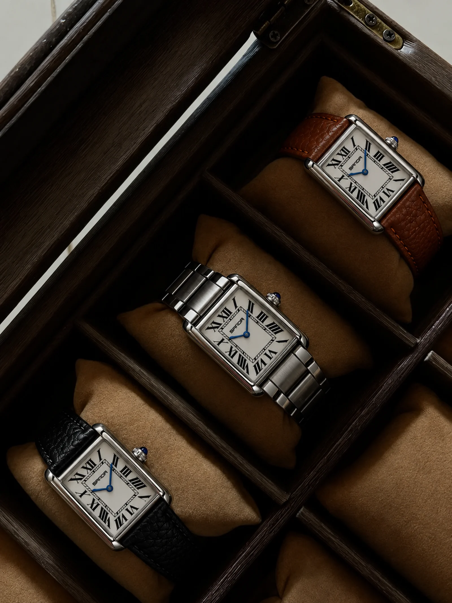
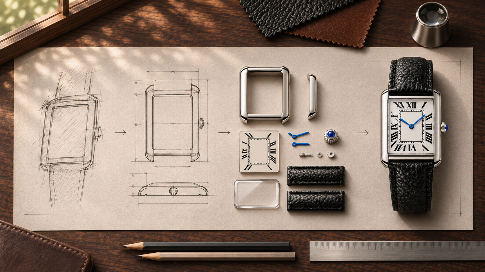

01
Forma
Proporções equilibradas e uma silhueta reconhecível. Design para permanecer relevante quando a tendência passar.

A Sanda nasceu da vontade de devolver significado a um gesto cotidiano: olhar para o pulso e lembrar que cada momento merece ser vivido por inteiro.

Tudo começou com uma inquietação: em um mundo cada vez mais rápido, por que os objetos que nos acompanham deveriam ser esquecíveis?
A resposta tomou a forma de um relógio. Linhas precisas, proporções clássicas e detalhes escolhidos para atravessar ocasiões — não tendências.
Assim nasceu a Sanda Brasil: uma curadoria de peças com presença, feita para quem entende que elegância não é excesso. É intenção.
Sanda Brasil
“Não contamos apenas as horas. Guardamos aquilo que acontece dentro delas.”
O tempo pode ser medido em minutos. Mas é lembrado em encontros, decisões, começos e conquistas. Criamos relógios para acompanhar esses instantes sem disputar atenção com eles.
Da primeira escolha ao último detalhe, cada peça passa pelo mesmo olhar.

Proporções equilibradas e uma silhueta reconhecível. Design para permanecer relevante quando a tendência passar.

Aço polido, couro com textura e mostradores de leitura limpa. Materiais escolhidos pelo que revelam de perto.
Um relógio deve completar quem o usa, nunca esconder. Discreto no gesto, marcante na memória.
A coleção inaugural nasceu ao redor de uma caixa retangular — um desenho clássico reinterpretado em três personalidades.
O preto do Classic, o calor do Signature e a força integral do Steel Edition. Três maneiras de vestir a mesma ideia: o tempo pode ter a sua presença.

Coleção inaugural · Sanda BrasilUma história que ainda está no começo — construída com escolhas conscientes e com as pessoas que decidem fazer parte dela.

Uma pesquisa por proporções atemporais levou à caixa retangular que define a identidade da primeira coleção.
Três modelos transformaram uma mesma assinatura em diferentes maneiras de estar presente.
Agora, cada relógio que encontra um pulso leva a Sanda a um novo momento, uma nova memória e um novo capítulo.
Há momentos que passam. Outros permanecem porque escolhemos estar presentes neles. Encontre o Sanda que vai acompanhar os seus.